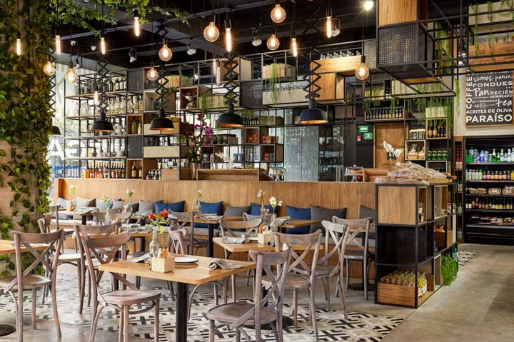
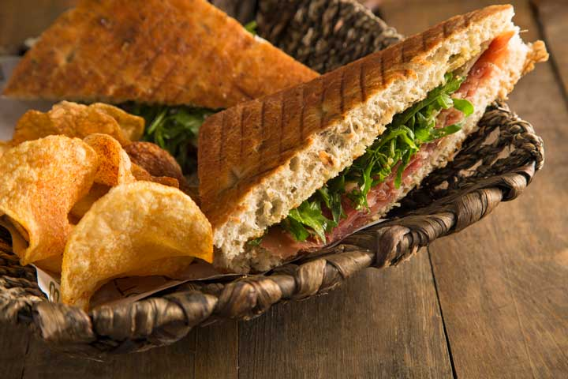

Conoce Bottega Culinaria
-

-
Nuestra Esencia
Somos un concepto novedoso que te invita a disfrutar de una verdadera experiencia culinaria, tanto para los expertos en las artes gastronómicas como para amateurs o aficionados que gustan de la buena comida.
Encuentra la variedad de productos que necesitas para convertirte en la sensación preparando platillos espectaculares para tus invitados o, si lo prefieres, déjanos consentirte con nuestra amplia gama de platillos hechos en casa con ingredientes seleccionados especialmente para que tú los disfrutes.
Si te gustan los ambientes acogedores, puedes probar nuestro menú en el restaurante, creado pensando en las necesidades y gustos para nuestros clientes, seleccionando cuidadosamente los detalles para que te enamores de cada una de nuestras creaciones.
¡Un paraíso culinario!

- 
-
Nuestras Tiendas
Nuestro concepto de vanguardia esta diseñado para la maximizar la experiencia culinaria en cada persona. Destacando los sabores a su máximo potencial.
Un espacio que hará de tus mañanas, tardes y noches momentos para recordar. Nuestras sucursales cuentan con una excelente ubicación.
¡Las mejores historias comienzan aquí!
- 
-
Alimentos Preparados
Hechos con los ingredientes de la mejor calidad, finamente preparados por las manos de nuestros chefs especializados que destacan y explotan los sabores de cada uno de nuestros platillos.